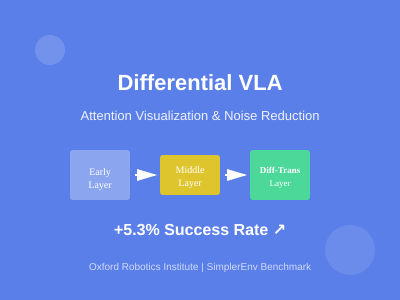
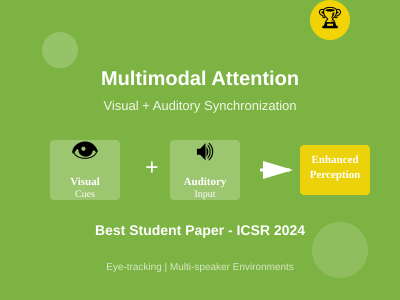
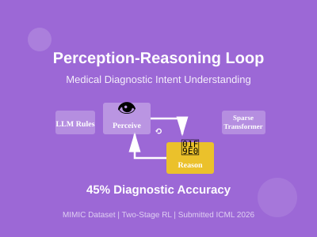
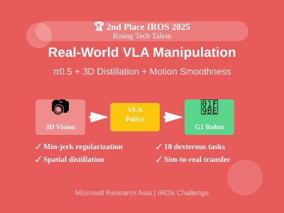

Xuanzhuo Liu


I’m Xuanzhuo Liu (刘萱卓), a senior at The Chinese University of Hong Kong, Shenzhen, majoring in Data Science. I’ve spent a wonderful year at the University of Oxford, studying Mathematics and Computer Science through the Visiting Student Programme (1 out of 30 students in China).
In terms of academic performance, my average GPA is 3.94, ranking first in my major (1/149). I achieved first class grades in 8 graduate-level courses at Oxford. I began my research under the supervision of Prof. Haizhou Li and Prof. Shuang Li on cognitive modeling and multimodal attention. Later, I researched robotic foundation models in the Oxford Robotics Institute under the guidance of Prof. Shimon Whiteson. Currently, I’m conducting research on embodied AI and VLA models at Microsoft Research Asia.
My Research Goal: I aim to build the next generation of general-purpose robotic systems that are both intelligent and trustworthy, bridging human intelligence and physical intelligence within a unified framework.
Research Framework

My research focuses on two complementary directions:
Human Intelligence for Physical Intelligence
Modeling human goals, preferences, and decision-making to make embodied agents more robust, adaptive, and aligned with human needs.
Physical Intelligence around Humans
Designing control and learning methods that enable physical agents to act safely in human-centered environments.
I’m especially motivated by challenges at the intersection of vision-language-action models, attention mechanisms for embodied agents, and continuous 3D perception. I aspire to pursue a PhD focused on building robots that maintain rich, persistent world models while acting in human environments.
Research Highlights

Differential VLA: Reducing Attention Noise for Robust Vision-Language-Action Policies
Developed a visualization pipeline to analyze how VLA models like Octo and OpenVLA allocate visual attention across transformer layers. Discovered that final layers become diffuse in cluttered scenes. Integrated Differential Transformer layers to preserve salient signals by filtering attention noise, achieving +5.3% success rate on SimplerEnv benchmark. Paper submitted to ICPR 2026 (first author).

The Impact of Synchronized Visual and Auditory Attention on Human Perception
Investigated whether synchronized visual cues (speaker's face and gaze) improve selective auditory attention in multi-speaker environments. Designed controlled experiments with eye-tracking to quantify multimodal attention patterns. Results showed that synchronized visual and auditory input significantly enhances speech comprehension. Best Student Paper Award at ICSR 2024 (co-author, led presentation).

Modeling Human Perception-Reasoning Loop for Intent Understanding
Built a model capturing how doctors perceive clinical signals, reason about diagnoses, and request additional information. Used LLMs to generate disease-specific diagnostic rule sets and grouped doctors by expertise levels. Implemented sparse transformer with two-stage reinforcement learning to model the perception → reasoning → perception loop. Achieved 45% diagnostic prediction accuracy on MIMIC dataset. 2025 Undergraduate Research Award. Submitted to ICML 2026.

VLA Models for Real-World Dexterous Manipulation
Pretrained π0.5-based 3D Vision-Language-Action policies and fine-tuned across 10 long-horizon dexterous tasks. Addressed motion jitter by adding minimum-jerk regularization for smoother trajectories and implemented 3D spatial distillation to internalize depth understanding without changing input format. Optimized control parameters for G1 robot deployment. 2nd place at 2025 IROS Manipulation Challenge, Rising Tech Talent Award.
Thanks for visiting — feel free to explore my work or reach out!
🎨 Misc.
I love music, dance, anime and nature. I'm a devoted fan of Hua Chenyu, whose songs have been a constant source of warmth and inspiration. Thanks to my mother’s encouragement, I’ve practiced piano and Chinese classical dance for over 15 years. I also love mountaineering and I'm currently learning Korean in my free time.